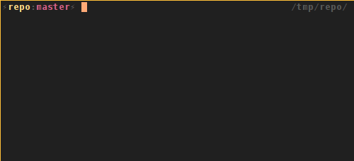

Vim for PHP Developers
Why on earth would any sane person use Vim for PHP development ? Is it still relevant in the days of full blown IDE's ?
The Goal of this presentation
- Touch some basics
- Show some PHP specific things
- Inspire you to research more about Vim

What is Vim ?
“Vim is a highly configurable text editor built to enable efficient text editing. It is an improved version of the vi editor distributed with most UNIX systems.”
“Vim is often called a "programmer's editor," and so useful for programming that many consider it an entire IDE. It's not just for programmers, though. Vim is perfect for all kinds of text editing, from composing email to editing configuration files.”
What is Vim NOT ?
“Vim isn't an editor designed to hold its users' hands. It is a tool, the use of which must be learned.”
“Vim isn't a word processor. Although it can display text with various forms of highlighting and formatting, it isn't there to provide WYSIWYG editing of typeset documents. (It is great for editing TeX, though.)”
Why Vim for PHP development
- Vim has everything (or almost) a PHP developer needs
- We just need to unlock or find the “right” feature
- Once you know it, it allows you to write while thinking
First
The editor, what is it about
Modal editor
Hu ? Modal editor?
A modal editor has different modes of operation.
- Normal mode
- Insert mode
- Visual mode
Normal mode
In this mode everything you “type” is interpreted as a command you give.
Insert mode
This is what you are used to, start typing and you are adding text
- “i” => insert mode at current position
- “I” => insert mode at beginning of line
- “a” => insert mode at next position (appending)
- “A” => insert mode at end of line (appending)
- “o” => insert mode open new line after current line
- “O” => insert mode open new line before current line
- “r” => insert mode replace current character
- “R” => insert mode start replace from current character
Visual mode
This mode could be compared to selecting some text
- “v” => highlight continuous text from current position
- “V” => highlight complete lines
- “ctrl + v” => highlight block mode (columns)
To define a visual highlight you can use all movement keys
Moving around without mouse and without arrow keys
In the end you should move around without mouse or arrow keys
Basic movement

Faster movement
- by word
- “w,e” => forward beginning or end of word
- “W,E” => forward beginning or end of word (context)
- “b,ge” => backward beginning or end of word
- line
- “0” => beginning of line
- “^” => beginning of line (non whitespace char)
- “$” => end of line
Faster movement
- “gg” => beginning of document
- “G” => end of document
- “{N}G” => goto linenumber {N}
- “ctrl + f” => 'scroll' page forward
- “ctrl + b” => 'scroll' page backward
Search movement
- “/{search}” => search forward for {search}
- “?{search}” => search backard for {search}
- “f{char}” => goto first occurence of {char} on this line
- “F{char}” => backward of “f”
- “t{char}” => goto char before first occurence of {char} on line
- “T{char}” => reverse of “t”
Commands
Why? Commands! This is just a text editor, why don't you just let me write some text.
Common commands
- Quit: “:q”
- Quit and I don't care about the changes: “:q!”
- Quit everything: “:qa”
- Write: “:w”
- Write and quit: “:wq”
“:help editing.txt”
Copy / paste
- Copy: “y” (called yank)
- Cut: “d” (delete)
- Cut Characters: “x” (cut after); “X” (cut before)
- Paste: “p”
“:help change.txt”
Text Manipulation
- Replace current selection: “r”
- Replace from current postion: “R”
- Substitute (search and replace):
“:s/{pattern}/{substitution}/{flags}” - Flip the case of character: “~”
- Increment number: “ctrl + a”
- Decrement number: “ctrl + x”
“:help change.txt”
Undo / Redo
- Undo: “u”
- Undo last change on this line: “U”
- Redo: “ctrl + r”
“:help undo.txt”
Quantifiers
Quantifiers can be used to 'extend' the reach of a command
- Move to the 5th word: “5w”
- Yank the next 3 lines: “3yy”
- Delete up til the end of the 3rd word form here: “d3e”
Ranges
Most commands support ranges, ranges are defined like
“:{start},{end} {command}”
- Visual selection: “:'<,'>”
- All lines in file: “:%”
- From line 4 to 10; “:4,10”
“:help range”
Formatting text
- Center align: “:ce {width}”
- Right align: “:ri {width}”
- Left align: “:le {indent}”
- Format paragraph: “gqip”
- Format current selection: “gq”
“:help formatting” “:help text-objects”
Extendability
Vim has it's own programming language VimL.
Most plugins are written in VimL
But not limited to it, you can use python, ruby, perl and lua too.
Configure Vim
The configuration will be done in “~/.vimrc” and addidional plugins to make our lives easier go into “~/.vim”
Choose mode
Vim has a vi compatible mode or you can choose to use the no compatible mode to be able to use all Vim specific features
Backup rules
Vim creates a backup of every file you edit, it also keeps a “swap” file by default. Vim also keeps views around but I personally never saw one saved to disk.
Vim can also persist undo information.
By default all these files are stored next to the file you are editing, this can pollute your source tree.
Filetype, syntax highlighting
We have to enable syntax highlighting and filetype detection, most distributions already enable this by default.
Tabstop
Tabstop is going to define how the syntax indentation and tab key will behave.
Linenumbers
When we are programming knowing what line we are on
Colorscheme
And ofcourse we 'never' use the default colorscheme since we all think thatone is not good enough for us
Many more configuration possibilities
The ones mentioned before are “most” important to start doing our job
Demo configuration
1 " nocompatible must be first ( use the real vimpower ) 2 set nocompatible
4 " backup rules 5 set backup " enable backup files (.txt~) 6 set undofile " enable persistent undo 7 8 silent execute '!mkdir -p $HOME/.vim/tmp/backup' 9 set backupdir=$HOME/.vim/tmp/backup " where to store backup 10 silent execute '!mkdir -p $HOME/.vim/tmp/swap' 11 set directory=$HOME/.vim/tmp/swap " where to store swap 12 silent execute '!mkdir -p $HOME/.vim/tmp/views' 13 set viewdir=$HOME/.vim/tmp/views " where to store view 14 silent execute '!mkdir -p $HOME/.vim/tmp/undo' 15 set undodir=$HOME/.vim/tmp/undo " where to store undo
17 " syntax 18 syntax on " enable syntax highlighting 19 " filetype 20 filetype on " enable filetype detection 21 filetype plugin on " enable filetype plugins 22 filetype indent on " enable filetype indentation
Demo configuration
24 " tabstop settings 25 set tabstop=4 " a tab will be represented with 4 columns 26 set softtabstop=4 " <tab> is pressed in insert mode 4 columns 27 set shiftwidth=4 " indentation is 4 columns 28 set noexpandtab " tabs are tabs, do not replace with spaces
30 " show linenumbers 31 set number
33 " colorscheme 34 set background=dark " indicate we'll use dark background 35 colorscheme elflord " example colorscheme, is default available, many more can be added
Still no word about PHP ?!?
No PHP yet !
Stuff for coders, what do we want?
- completion
- search in files
- file/folder navigation
- (syntax) errors
- project based configuration
- vcs integration
- debugging
Many of the things we need are available out of the box
completion
- “ctrl-x ctrl-f” file names
- “ctrl-x ctrl-l” whole lines
- “ctrl-x ctrl-i” current and included files
- “ctrl-x ctrl-k” words from a dictionary
- “ctrl-x ctrl-t” words from a thesaurus
- “ctrl-x ctrl-]” tags
- “ctrl-x ctrl-v” Vim command line
supertab
Supertab is a plugin that makes completion 'super' easy.
(C)tags
(C)tags is not really a plugin, it is a built in feature of Vim. This built in feature can already start making our lives much easier.
There are plugins to generate your tagfiles on save, or on quit. I personally generate them whenever I see fit.
- Jump to tag under cursor: “ctrl+]”
- Go back to originating file: “ctrl+t”
“:help tagsrch.txt”
search (in) files
- “:grep {search} {infiles}”
- “:lgrep {search} {infiles}”
- “:vimgrep {search} {infiles}”
- “:lvimgrep {search} {infiles}”
- “:cnext” goto the next result
- “:cprevious” goto the previous result
The default search functions in Vim are fairly hard to use
ctrlp.vim
In short this is a fuzzy typed fast filefinder
ack.vim
As you could guess the plugin uses the ack command to search in code files.
file/folder navigation
There is by default a file navigator built in in vim called netrw, if you have to use it, it does the job fine, but it is not really user frienly.
We can also easily navigate our files if we use tags.
The NERD Tree
The NERD Tree is a tree like file explorer for vim

NERDtree + Ack.vim
NERDTree Ack is an extension for nerdtree which adds a few menu items to search with ack

syntax errors
You could manually abuse the makeprg setting in vim and set it to “php -l %” but when using PHP, html, javascript, ... you might want syntax errors for all of those languages.
Syntastic
Syntastic is a syntax checker plugin, it will run a syntax check on the open file.
project based configuration
We must explicitly add a configuration option to allow vim to load a .vimrc file from the directory you are starting vim from.
“:help exrc”
Sauce for Vim
Sauce is a “project” like plugin, it creates an extra project specific vimrc file where you can keep the location of the project, maybe indenting options, ...
vcs integration
These days we are so used to vcs integration we also depend on it inside our editor/ide
vim-fugitive
Fugitive is a git wrapper for vim, you can run practically every git command from fugitive.

vim-signify
Signify is a plugin to indicate what lines are removed/added/changed. It supports multiple vcs systems.
debugging
Debugging for specific languages is not built into vim because there are many protocols and systems to support.
vdebug
Vdebug is a debug integration for Vim. Every debugger speaking DBGP protocol can be used. Xdebug speaks DBGP ;)
Making our live easier
For php there are a number of usefull plugins to make our lives easier
NERDcommenter
NERDcommenter helps you to quickly add comments to a line or multiple lines.
UltiSnips
With UltiSnips you can create any possible snippet of code you want to reuse often
vim-snippets
But why recreate default templates when there is a central repository for those
php_getset
php_getset creates getter and setter methods from the paramters selected in your class.
Plugin manager
In the old days you usually installed plugins by extracting a zipfile in your “~/.vim” folder. Luckily, these days are over, now we have several plugins ;) that manage our plugins.
Some “plugin managers”:
#@!! Vim is HARD!

Questions ?
Usefull resources
Thanks.
Ike Devolder
@BlackIkeEagle
Senior Webdeveloper - Studio Emma
Archlinux Trusted User